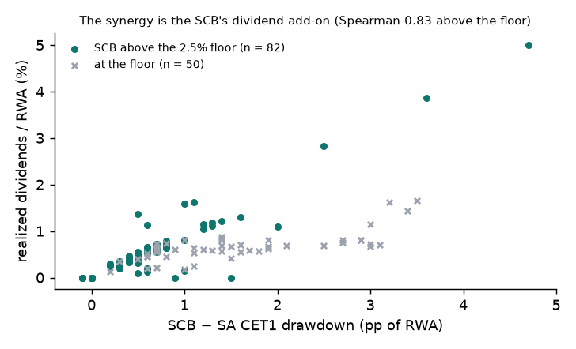
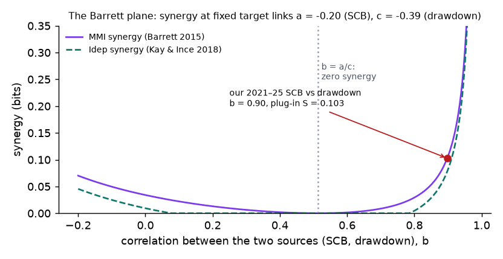
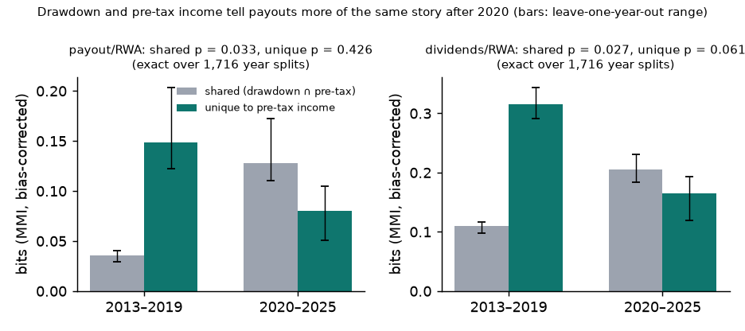
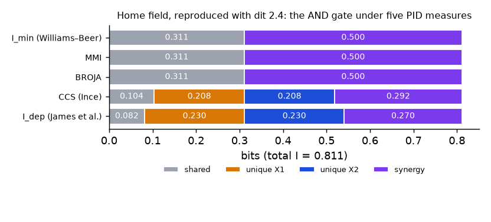

Partial information decomposition (Gaussian PID: MMI and Idep) · from computational neuroscience and information theory (how brain areas jointly encode a stimulus)
Is the stress buffer's payout news shared, unique, or synergistic?
What it isSplits what two stress results tell us about payouts into shared, unique-to-each, and only-together (synergy) bits.
VerdictInteresting. Home field: promising but contested (redundancy measures disagree; Gaussian mechanics well established).
Top pickMath (effort M): Measure-robust synergy: report the whole Hi-Fi–MMI range with a small-sample test, and name the source contrast carrying it.
co-information \(I(T;X_1)+I(T;X_2)-I(T;X_1,X_2)\) = redundancy minus synergy
negative when synergy dominates
Assumptions
The three copula scores are jointly Gaussian (a Gaussian copula). Then all information quantities are functions of \(a,b,c\) and are a lower bound on the information in the raw data (Ince et al. 2017). Ties (zero payouts) get average ranks.
Within a test year, firms are exchangeable under the null; firms are the independent units for uncertainty (firm-block bootstrap).
A PID needs one extra definition beyond Shannon theory, the redundancy. That choice is the contested part (see Robust at home). We report MMI (pre-registered) and Idep, plus the bounds every nonnegative PID must satisfy.
The estimator
The three equations Shannon theory gives, with four unknowns (Williams & Beer 2010):
For Gaussian scores, \(I(T;X_j)=-\tfrac12\log_2(1-\rho_j^2)\) and \(I(T;X_1,X_2)=\tfrac12\log_2\frac{1-b^2}{1-a^2-b^2-c^2+2abc}\), each with the analytic small-sample entropy correction used by gcmi. The fourth equation is the redundancy:
$$R_{\mathrm{MMI}}=\min\{I(T;X_1),\,I(T;X_2)\}\quad\text{(Barrett 2015, eq. 33)},\qquad \mathrm{unq}_1^{\mathrm{dep}}=\min\{b_e,\,d_e,\,i_e,\,k_e\}\quad\text{(Kay \& Ince 2018, Table 5)},$$
where the Idep edge values are \(b_e=d_e=I(T;X_1)\), \(i_e=\tfrac12\log_2\frac{1-a^2c^2}{(1-a^2)(1-c^2)}-I(T;X_2)\), \(k_e=I(T;X_1,X_2)-I(T;X_2)\), and symmetrically for \(X_2\). Every nonnegative PID lies on the segment \(\max(0,\mathrm{coI})\le R\le R_{\mathrm{MMI}}\), so \(S\ge\max(0,-\mathrm{coI})\) (Van Santen, Rosseel & Marinazzo 2026).
Why it works, step by step
Step 1 · MMI synergy is the weak source's conditional informationSay \(X_2\) is the stronger source. Then \(R=I(T;X_1)\), \(U_1=0\) and \(S=I(T;X_1,X_2)-I(T;X_2)\). By the chain rule \(I(T;X_1,X_2)=I(T;X_2)+I(T;X_1\mid X_2)\), so \(S_{\mathrm{MMI}}=I(T;X_1\mid X_2)=-\tfrac12\log_2\big(1-r^2_{T1\cdot2}\big)\), where the partial correlation is \(r_{T1\cdot2}=(a-bc)/\sqrt{(1-b^2)(1-c^2)}\).
Step 2 · zero synergy is a line, and our point is far from itFrom step 1, \(S_{\mathrm{MMI}}=0\iff a=bc\iff b=a/c\) (Barrett 2015, below eq. 67). For P1, \(a/c=0.51\) but the observed source correlation is \(b=0.90\). Because \(S\) grows quickly as \(b\to1\) (the determinant \(1-a^2-b^2-c^2+2abc\to0\)), two highly correlated sources that point slightly differently at the target create a lot of synergy. That is the "Barrett plane" chart.
Step 3 · why OLS flips the SCB's signThe standardized OLS slope on \(X_1\) given \(X_2\) is \(\beta_1=(a-bc)/(1-b^2)\), the same numerator as in step 1. With \(a=-0.20,\ b=0.90,\ c=-0.39\): \(a-bc=-0.20+0.35>0\), so \(\beta_1>0\) although the SCB alone is negatively related to payouts. OLS shows this as a large positive \(t\) with an inflated variance. Commonality analysis shows it as a negative common share \(a^2+c^2-R^2_{12}<0\). PID books the same fact as a nonnegative amount of synergy, and does not call the SCB "positive for payouts".
The null and inference
Any information at all: permute \(T\) within test year (4,999), statistic \(I(T;X_1,X_2)\).
Synergy: a Freedman–Lane null. Regress the weaker source on the stronger, permute the residuals within year (4,999) and rebuild the weaker source. This keeps the source correlation and breaks only the weak source's conditional link to \(T\).
Uncertainty: firm-block bootstrap (2,000 resamples of the 34–40 firms, with the copula recomputed per resample) for every atom. An atom is called "present" only if its 95% CI excludes 0 and its null p < 0.05. It is called "robust" only if that holds under MMI and Idep.
Multiplicity: the five P1 synergy tests (payout, dividends, next-year, buybacks, SCB vs pre-tax) Holm-adjusted: 0.001, 0.001, 0.020, 0.64, 0.72 (computed). Era differences: exact over all 1,716 assignments of 7 of the 13 test years.
Calibration on our shape (Gaussian simulations, \(n=132\), 300 each): with true synergy 0, the Freedman–Lane test rejects 3.3% and the full MMI rule 0%. At the observed shape (true \(S_{\mathrm{MMI}}=0.104\), \(S_{\mathrm{dep}}=0.079\)): MMI rule 88% power, Idep CI rule 32%. With a weaker effect (\(a=-0.27\), true \(S_{\mathrm{MMI}}=0.026\)): 17% and 0.7%.
Toy example (computed by cards/_toys/toys.py)
Correlations \(a=\mathrm{corr}(T,\mathrm{SCB})=-0.2\), \(c=\mathrm{corr}(T,\mathrm{dd})=-0.4\), \(b=\mathrm{corr}(\mathrm{SCB},\mathrm{dd})=0.9\). \(R^2\): SCB 0.04, dd 0.16, both \((0.04+0.16-2(-0.2)(0.9)(-0.4))/(1-0.81)=0.056/0.19=0.2947\). In bits: \(I_1=0.0294\), \(I_2=0.1258\), \(I_{12}=0.2519\).
The usual tools: standardized OLS betas SCB \(+0.842\), dd \(-1.158\) (the SCB flips sign). Commonality: unique 0.1347 and 0.2547, common \(-0.0947\). The zero-synergy line is \(b=a/c=0.5\). At \(b=0.9\) the SCB's partial correlation with \(T\) given dd is 0.401.
How it differs from the standard tool. Regression (OLS, ARDL, SARIMAX with both regressors) asks for a coefficient per source holding the other fixed. With collinear sources that question is unstable and can flip signs, and variance inflation is treated as a nuisance. Commonality analysis splits \(R^2\) but allows negative shares. PID asks a different question: how much of what each source says is said by the other, how much only by it, and how much only by the pair. It answers in nonnegative bits on a rank (copula) scale that is robust to the payout outliers. It costs one extra assumption, the redundancy measure, and we show how much that choice moves the answer.
Followed: Barrett (2015), Phys. Rev. E 91:052802, arXiv:1411.2832, Sec. 4.2–4.3, eqs. (33), (64)–(67) (closed form checked to 10−15). Kay & Ince (2018), arXiv:1803.02030, Sec. 2, Table 5, Proposition 2, Example 4 (reproduced to 4 dp). Copula estimator: Ince et al. (2017), Hum. Brain Mapp. 38(3):1541–1573 (abstract read; bias correction as in the gcmi code, parity 2×10−15). Lattice: Williams & Beer (2010), arXiv:1004.2515 (abstract read). Segment bounds: Van Santen, Rosseel & Marinazzo (2026), arXiv:2611.08131 (abstract read; the segment statement is taken from the abstract, and its equations were not checked).
What we found
Usual tools on the same data
PID atoms (MMI, Idep, add-on)
Finding 1
The SCB tells little on its own; with the drawdown it adds synergy.
2021–2025, 132 firm-years, 34 firms, within-year copula ranks. Information about payout/RWA: SCB 0.023 bits, CET1 drawdown 0.111, both 0.208 (within-year permutation p = 0.0002). MMI: shared 0.023, unique to drawdown 0.087, synergy 0.097 (firm-bootstrap 95% CI 0.008–0.186; Freedman–Lane null 95th percentile 0.012, p = 0.0002). Dividends/RWA: synergy 0.185 (CI 0.034–0.301). Net buybacks: nothing (joint p = 0.22). On the same data OLS gives SCB t = +5.07 and drawdown t = −5.42 (VIF 6.5), and commonality analysis gives unique shares 0.250 and 0.352 with a common share of −0.236.
Pre-registered finding (joint p < 0.05; atom CI excludes 0 and its null p < 0.05) met under MMI for payout and dividends. Bits are bias-corrected (computed).
SCB − drawdown vs realized dividends

Where our estimate sits on the Barrett plane

Finding 2
The synergy is the SCB's dividend add-on, put there by rule.
By 12 CFR 225.8(f)(2), SCB = max(2.5%, stress CET1 decline + four quarters of planned dividends / RWA). Above the 2.5% floor (82 of 132 firm-years) SCB − drawdown ranks with realized dividends/RWA at Spearman 0.83. With the add-on and the drawdown as sources, synergy is −0.006 bits (MMI) and 0 (Idep), and the add-on carries 0.171 bits about payout/RWA (0.513 about dividends) that the drawdown does not.
Post hoc (labelled): run after the synergy was seen. A mechanical link, not a behavioural finding; the QUESTIONS.md caveat on post-2020 construction applies.
Finding 3
The synergy depends on the PID measure; at n = 132 only MMI calls it.
Kay & Ince's Idep on the same data: unique to SCB 0.025 (CI 0.0001–0.071), unique to drawdown 0.112, shared 0.004, synergy 0.078 with a CI down to 0. The measure-free lower bound (the Hi-Fi end of Van Santen et al.'s segment) is 0.074 bits, and its CI also reaches 0. Gaussian simulations at our shape (300 each): the MMI rule has 0% false positives when synergy is 0 and 88% power at the observed effect, but the Idep CI rule has only 32% power.
So the synergy is real under the maximum-overlap measure, and positive in point estimate under every measure, but not measure-robust at our sample size. This is the top-pick Math avenue.
Finding 4
Adverse vs severely adverse drawdown: no robust extra information (Q3.4).
2014–2019, 177 firm-years: SA drawdown 0.037 bits, Adverse drawdown 0.001, both 0.074. MMI synergy 0.037 (Freedman–Lane p = 0.0016) but firm-bootstrap CI −0.004 to 0.120; Idep gives unique-to-SA 0.040 (CI 0.0004–0.134) and nothing robust for Adverse. OLS on raw data: neither slope significant (p = 0.15 and 0.33).
Agrees with the 11-16 pim run (the SA−Adverse gap adds nothing).
Shared vs unique by era

Home field: AND gate under five PID measures

Finding 5
After 2020 drawdown and pre-tax income share more of what they say (Q3.3).
Sources: SA drawdown and SA pre-tax income. Shared information about payout/RWA rose from 0.036 bits (2013–2019, n = 195) to 0.128 (2020–2025, n = 165), exact p = 0.033 over all 1,716 7/6 splits of the 13 test years (Idep 0.034 → 0.124, p = 0.042). For dividends: 0.110 → 0.205 (p = 0.027), while pre-tax income's unique part fell 0.315 → 0.165 (p = 0.061). Leave-one-year-out: era-2 shared 0.111–0.172 vs era-1 0.029–0.041 in every drop. No synergy in either era; the drawdown has no unique information once pre-tax income is known.
Pre-registered (P3). Consistent with the 11-17 STATIS era split.
Finding 6
Out of sample, the redundant source adds nothing, as PID predicts; nothing beats climatology by much.
Walk-forward next-year payout/RWA, test years 2016–2024 (254 firm-years). RMSE: OLS(pre-tax) 1.020, + drawdown 1.026 (+0.6%); ARDL(1,0)(pre-tax) 1.064, + drawdown 1.069 (+0.5%); per-firm SARIMAX(1,0,0)+exog 1.117 → 1.170 (+4.8%); climatology 1.065. Adding pre-tax income to drawdown helps OLS (−2.6%) but not ARDL (+0.3%).
Pre-stated check met: the redundant source's added value ≤ 1% in OLS and ARDL. A description tool, not a forecaster. The SCB walk-forward (2 test years, 52 firm-years) is too short and not scored.
Who plays what
Home field (neuroscience)
Our data (Q3, public)
Stimulus or behaviour (the target the brain encodes)
A firm's realized payout/RWA (or dividends, net buybacks) from FR Y-9C
Two brain regions or neurons (sources)
Two stress-test outputs for the same firm and test: SCB and CET1 drawdown; SA and Adverse drawdown; drawdown and pre-tax income
Trials
Firm-years within a test year (ranks are taken within the year)
Redundancy: both regions carry the same stimulus information
Both outputs rank firms' payouts the same way
Synergy: information only in the joint pattern (the XOR case)
Payouts line up with a contrast of the two outputs, here SCB minus drawdown (the dividend add-on)
Gaussian-copula MI for MEG/EEG (Ince et al. 2017)
Rank-based information that ignores the payout outliers (max payout/RWA 7.97% vs median below 1%)
Inputs and preprocessing
The lab's verified public panel runs/2026-11-17/statis/q3_pim_panel.csv (sha256 6aa2f52a…), built 11-14/11-16 from public_results_DFAST_2026.csv, FFIEC BHCF zips (HI-A Q4: BHCK4460, BHCK4783, BHCK4782; RWA) and the Large Bank Capital Requirements PDFs. 13 severely adverse exercises 2013–2025, 364 firm-years (360 with payouts), 43 firms.
P1 (Q3.2): 2021–2025, the SCB years, 132 firm-years, 34 firms, 50 of them at the 2.5% floor. P2 (Q3.4): 2014–2019, the years with Adverse results, 177 firm-years with both drawdowns. P3 (Q3.3/Q3.5): all years, split 2013–2019 (195) and 2020–2025 (165).
Every variable is rank-normalized within its test year. No imputation, no winsorizing (ranks make it unnecessary). Rows with a missing target or source are dropped per analysis.
What we ran
Home field (before our data): Williams–Beer and four other PID measures on the XOR and AND gates (dit 2.4); Barrett's closed form vs gpid's mmi_pid vs our port; Kay & Ince's Example 4; our Gaussian MI vs gcmi mi_gg.
Bias at our sizes: 2,000 Gaussian draws at n = 132, 181 and 360. The plug-in redundancy is biased up by 0.001–0.004 bits and the plug-in synergy by 0.002–0.004; the corrected estimates are within 0.005 of the truth (computed, power_bias.json).
P1: atoms for payout, dividends, net buybacks and next-year payout from (SCB, drawdown), and payout from (SCB, pre-tax income); three nulls and firm-block CIs; OLS (firm-clustered), VIF and commonality on raw and on rank data.
P1 mechanism check (post hoc, labelled): replace the SCB by SCB − drawdown, the dividend add-on of 12 CFR 225.8(f)(2).
P2: SA vs Adverse drawdown, payout and next-year payout.
P3: drawdown vs pre-tax income by era, exact era-split permutations, leave-one-year-out.
Idep for every P1–P3 analysis (pre-stated addendum); Hi-Fi–MMI segment bounds (added after results, labelled).
P4: size and power of the synergy rule at the observed P1 shape.
Benchmark B: walk-forward next-year payout/RWA with OLS, pooled ARDL(1,0) and per-firm SARIMAX(1,0,0) + exog (≥ 7 firm observations, else ARDL; 118 firm fits), test years 2016–2024; timing.
Pre-registered before any run on our data: runs/2026-11-23/PREREG.md (14:27 ET, Idep addendum 14:33 ET). Added after seeing results and labelled: the add-on mechanism check and the segment bounds. One deviation: the pre-registration asked for parity with gpid below 10−9; we get 1.1×10−7, because gpid adds a 10−7 ridge to the source covariance (its code). Parity with the closed form is below 10−15.
How to read the main chart
1 Left picture (usual tools): OLS with both regressors gives the SCB a positive t of +5.07 and the drawdown −5.42. Taken at face value, that says a higher buffer goes with higher payouts. The commonality bars sum to more than the total R² because the "common" bar is negative (−0.236).
2 Right picture (PID): each bar is 100% of what the two sources tell us about payout ranks, in bits, split into grey (shared), orange (only in the first source), blue (only in the drawdown) and purple (only in the pair).
3 Top bar (MMI): the SCB alone says 0.023 bits, all of it shared. The drawdown adds 0.087 of its own. The pair adds 0.097 that neither shows alone.
4 Middle bar (Idep): a different redundancy rule moves 0.025 bits from "shared" to "only in the SCB" and keeps most of the synergy (0.078). That is the measure dependence the home field argues about.
5 Bottom bar: replace the SCB by SCB − drawdown (the dividend add-on) and the purple bar disappears. The add-on carries 0.171 bits on its own, so the "synergy" was a contrast of the two sources.
6 Barrett-plane chart: synergy rises steeply once two sources are more than about 0.8 correlated. Our SCB and drawdown sit at 0.90, far from the zero-synergy line at 0.51.
What it means for a decision-maker
Ranked within a test year, a bank's stress capital buffer says little about how much it pays out. What it does say mostly repeats the drawdown. The buffer looks informative only next to the drawdown, and the reason is the rule that sets it: the buffer is the stress drawdown plus a year of the bank's own planned dividends. Subtract the drawdown and you are left with the dividend plan, which of course lines up with dividends paid. So the regression that says "a higher buffer goes with higher payouts" is reading the dividend plan baked into the buffer, not a reward for a bigger buffer. Separately, since 2020 the drawdown and projected earnings carry more of the same message about payouts than before. The less stressed earnings path still adds its own, smaller piece. Nothing here predicts next year's payouts better than simple averages.
Where it breaks
Measure dependence: the synergy passes our rule under MMI, the measure with the largest possible synergy, but under Idep and at the measure-free lower bound its CI reaches 0. At our n the Idep test has 32% power, so the miss may be power, not absence.
The mechanism is by construction. Our SCB values are rounded to 0.1 in the PDFs, so SCB − drawdown is slightly negative for a few firms. Planned dividends (quarters 4–7) and realized calendar-year dividends are different periods and RWAs.
Copula scores assume a Gaussian dependence. Tail-only links (e.g. the NCA ceiling seen on 11-20) are underestimated: GCMI is a lower bound.
Small samples: 34 firms; firm-block CIs are wide (synergy 0.008–0.186). Era results pool unbalanced firm sets.
Calendar-year payouts partly precede the June results; association only.
What we'd do next
Math (top pick): measure-robust synergy. Report the whole Hi-Fi–MMI segment with a design-aware small-sample test, and name the source contrast that carries any synergy (here it should recover SCB − drawdown).
Three-source PID on dividends vs buybacks with the SCB split into decline and add-on (Q3.5).
New use for Q2.2, text vs numbers, on the SYNTHETIC mocks (see Secret sauce).
Promising but contested (16 years of theory and wide use in neuroscience, with exact Gaussian formulas, but no agreed redundancy measure; the atoms you get depend on the one you pick)
What the home field has established
Origin. Williams & Beer (2010, arXiv:1004.2515; abstract read) proposed the nonnegative decomposition and the redundancy lattice, motivated by interaction information being "sometimes negative".
Gaussian case. Barrett (2015, Phys. Rev. E 91:052802; Sec. 4 read) proved that for a univariate target, every PID whose redundancy and unique terms depend only on the source–target marginals reduces to MMI. That includes the main proposals of the time. He gave closed forms (eqs. 64–67) and showed Gaussian systems often have net synergy.
Estimation. Ince et al. (2017, Hum. Brain Mapp. 38(3):1541–1573; abstract read) gave the Gaussian-copula MI estimator (a rank-based lower bound) with permutation testing. Venkatesh et al. (2023, NeurIPS spotlight, arXiv:2307.10515; abstract and bias section read) gave a multivariate Gaussian PID and the first finite-sample bias correction. They note that bias and variance of PID estimates "remain largely unexplored".
Use. Luppi et al. (2022, Nature Neuroscience, doi 10.1038/s41593-022-01070-0) map a "synergistic core" of the human brain with the Gaussian MMI solver from JIDT (per the search summary of the PMC text; not read in full). In finance, Scagliarini et al. (2020, Entropy 22:1000; abstract read) apply a Granger-based PID to stock-index triplets; we found nothing on bank capital or payouts. A 2026 NeurIPS spotlight uses PID to test "synergy" claims in AI (seen on X; not read).
Critiques. James, Emenheiser & Crutchfield (2017, arXiv:1709.06653; abstract read) say the framework is "hindered by a lack of a generally agreed-upon" measure and propose Idep. Kay & Ince (2018, arXiv:1803.02030; Sec. 2 and examples read) prove that Immi gives redundancy and synergy at least as large as Idep, with equality only under conditional independence. Van Santen, Rosseel & Marinazzo (2026, arXiv:2611.08131; abstract read) show that all nonnegative two-source PIDs lie on a segment from Hi-Fi (zero overlap) to MMI (maximum overlap).
Software. dit 2.4 (BSD-3; 581 GitHub stars; 10,467 PyPI downloads last month; pushed 2026-11-23): discrete PIDs. gcmi (GPL-3; 103 stars; pushed 2026-07-23): copula MI. gpid (2 stars, no licence file, last push 2024-12-18): Gaussian PIDs. JIDT (Java) is used by Luppi et al. Discrete tools are mature; the Gaussian tooling is research code.
Our reproduction
Williams–Beer on the AND gate: redundancy 0.3113, synergy 0.5, uniques 0 (dit), the textbook values. On the same gate CCS gives redundancy 0.104 and Idep 0.082, with nonzero uniques. That is the disagreement, reproduced. XOR: synergy 1 bit under all five.
Barrett eqs. (64)–(67) vs our port: below 10−15 on four settings, including the zero-synergy case b = a/c. Vs gpid mmi_pid: 1.1×10−7 (its built-in ridge).
Kay & Ince Example 4, reproduced to 4 dp. Population: Idep 0.2877 / 0.2877 / 0.1981 / 0.4504, Immi synergy 0.7380. Sample: Idep 0.2324 / 0.3068 / 0.1623 / 0.4921, Immi 0 / 0.0744 / 0.3948 / 0.7245. The paper prints Immi redundancy 0.4587 for the population case; the formula gives 0.4857 (computed), probably a transposed digit.
Our bias-corrected Gaussian MI matches gcmi mi_gg to 2×10−15.
Verdict
Promising but contested. The Gaussian mechanics are exact and checkable, and the copula estimator is standard in neuroimaging. What is contested is which redundancy to use. MMI, the measure behind most Gaussian applications, sits at the end of the range with the most synergy. Any claim of synergy should be shown across the range; on our data it survives only at the MMI end at n = 132.
Found via. Web search, 2026-11-23 14:23 ET (query "Gaussian partial information decomposition bias correction Venkatesh NeurIPS 2023 code") → github.com/praveenv253/gpid, arXiv:2307.10515; same search session → Barrett (2015). X search 2026-11-23 14:40 ET (connector, "partial information decomposition") → x.com/Encoding/status/2118725778070266240 → arXiv:2611.08131. arXiv API 14:31 ET → Kay & Ince (2018). Novelty: exotic-transfer (computational neuroscience / information theory → bank stress tests and payouts). Source field: computational neuroscience.
1 · Engineering · Effort S
A batched Gaussian-copula PID engine with the nulls built in
One call returns MMI and Idep atoms, the Hi-Fi–MMI segment, within-group copula scores, Freedman–Lane synergy p, firm-block CIs and a pass/warn/fail judgement. gpid, dit and gcmi serve as oracles.
Math sketch. Every atom is a closed-form function of the three copula correlations \((a,b,c)\), so the cost is in resampling. Rank once per group. Under Freedman–Lane only the weak column changes, \(W^*=\hat\beta V+\pi(e)\), so \(a^*=\langle T,W^*\rangle/n\) and \(b^*=\langle V,W^*\rangle/n\) are two dot products. A batch of \(B\) permutations is one \(B\times n\) gather and two matrix–vector products. The bootstrap reuses per-firm sufficient statistics (sums of cross-products of within-year scores; the scores themselves are recomputed approximately, or exactly via cached per-year rank tables). For \(p\) features and one target, all \(p(p-1)/2\) pair PIDs come from one \(p\times p\) correlation matrix.
Why it matters here. This run's loop took 6.6 s per source pair (4,999 + 4,999 permutations, 2,000 bootstraps; computed). A Q2 screen over hundreds of program features, or a year-by-year Q3 sweep, needs it to be far cheaper.
Closest prior work: gpid (Venkatesh et al. 2023; no resampling nulls), gcmi (MI only), dit (discrete), JIDT (Java; MMI Gaussian). None found with Freedman–Lane or firm-block nulls.
Test (pass bar set now). Atoms within 10−10 of the Barrett and Kay–Ince closed forms and of this run's port on P1–P3. Kay & Ince Example 4 to 4 dp. P1 p-values within Monte-Carlo error of this run. ≥ 50× faster than 6.6 s for the same resampling counts. Null: this run's port as oracle.
2 · Math · Effort M · ★ Top pick
Measure-robust synergy with a named contrast
Make "synergy" a claim that survives the choice of PID measure and the sample size, and say what the synergy is.
Math sketch. (i) Report the segment \(S\in[\max(0,-\mathrm{coI}),\,S_{\mathrm{MMI}}]\) with a joint firm-block bootstrap. Call synergy "robust" only if the lower end's one-sided 95% bound is above 0, with the bias of each end corrected by the Cai et al. entropy terms, propagated per atom rather than by Venkatesh's single fraction. (ii) Design-aware null: Freedman–Lane within year at the lower end. (iii) Named contrast: \(S_{\mathrm{MMI}}=I(T;X_w\mid X_s)\), carried by the residual direction \(d=X_w-bX_s\). Report \(d\) in source units with a bootstrap band, and its angle to any rule-based contrast (here SCB − drawdown).
Why it matters here. Today's headline synergy (0.097 bits) is significant under MMI only. The Idep CI and the Hi-Fi lower bound (0.074) reach 0, and the Idep test has 32% power at our shape. A robust version would say whether the SCB × drawdown synergy is a property of the data or of the measure, and would name the dividend add-on without our post-hoc step.
Closest prior work: Van Santen, Rosseel & Marinazzo (2026, arXiv:2611.08131; segment and Hi-Fi end, no inference); Venkatesh et al. (2023; bias correction of the union information only); Kay & Ince (2018; deviance tests of graphical models). No small-sample test of the segment's lower end found.
Test (pass bar set now). Gaussian simulations at n = 132 with our marginals (300 per setting): "robust synergy" false-positive rate ≤ 5% when true synergy = 0 (b = a/c), and power ≥ 60% at true MMI synergy 0.08 bits. On P1 the recovered contrast is within 15° of SCB − drawdown. Null: Freedman–Lane within year.
3 · New use on our data · Effort M
Text vs numbers for many short programs (Q2.2)
Ask how much a program's free-text description tells us about its growth that its tabular features do not, and how much only the two together tell.
Math sketch. Target: program growth (or last-year surprise). Source 1: the top-\(k\) SVD components of TF-IDF on descriptions with numeric sentences removed. Source 2: the tabular features (function, segment, size, intent). Multivariate Gaussian-copula PID (Venkatesh et al.'s ~G-PID for vector sources, MMI and Idep as bounds). Bias-correct with \(k\) and the feature count; permute text across programs within function for the null.
Why it matters here. Q2.2 is the sub-question no scout pick has answered well. The 11-19 phylogenetic run found the scrubbed-text tree carries less signal than the labels (λ 0.35 vs 0.52), but could not say whether the text adds anything beyond the labels.
Closest prior work: this lab's 11-19 phylo-signal run (text vs label trees); Venkatesh et al. (2023, multivariate Gaussian PID). None found applying PID to text vs tabular features in budgeting.
Test (pass bar set now). On both SYNTHETIC mocks: unique(text) 95% CI excludes 0 for the generator's planted text-signal programs, and is ≤ 0.01 bits when descriptions are scrubbed of the planted cue. Null: within-function text permutation (999). Uses SYNTHETIC data only.
Q3.2 · Buffer versus path
New answer: within a test year, the SCB carries 0.023 bits about payout ranks, all of it shared with the drawdown (MMI). Its apparent extra content shows up only next to the drawdown, as synergy (0.097 bits, CI 0.008–0.186), and that synergy is the dividend add-on the rule puts in the SCB: SCB − drawdown carries 0.171 bits and the synergy vanishes. The buffer's "news" about payouts beyond the path is the firm's own dividend plan. Consistent with 11-14 IDR (SCB no skill), 11-16 pim (SCB + drawdown "unidentified") and 11-20 NCA (SCB never binds).
Q3.3 · Year-to-year movement
After 2020, drawdown and SA pre-tax income share more of what they say about payouts: 0.036 → 0.128 bits (exact era p = 0.033), dividends 0.110 → 0.205 (p = 0.027), in every leave-one-year-out drop. Pre-tax income keeps unique information in both eras; the drawdown has none once pre-tax income is known.
Q3.4 · Easier versus severe
2014–2019: the Adverse drawdown alone says 0.001 bits; its synergy with the SA drawdown (0.037) fails the bootstrap CI. Nothing robust; agrees with the 11-16 pim result.
Q3.5 · Dividends vs buybacks
The SCB × drawdown synergy is a dividend story (0.185 bits for dividends/RWA; nothing for net buybacks, joint p = 0.22). Before 2020, pre-tax income's unique information about dividends is large (0.315 bits); after 2020 it is 0.165 (p = 0.061).
Still missing: firm-level baseline projections (not published); the October 2020 SCB PDF; the planned-dividend amounts behind each firm's add-on (not published as a panel; implied here as SCB − drawdown above the floor). Public data only; descriptive; FR Y-9C stays descriptive (no Y-9C trading forecast). · All questions
Full tables, code and data notes: the 2026-11-23 edition · scripts in runs/2026-11-23/ · card sources in cards/gaussian-pid/.